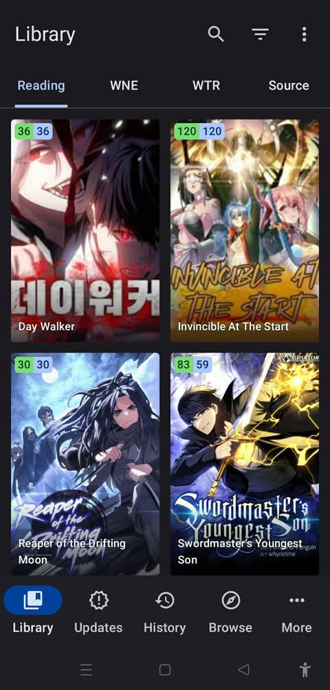
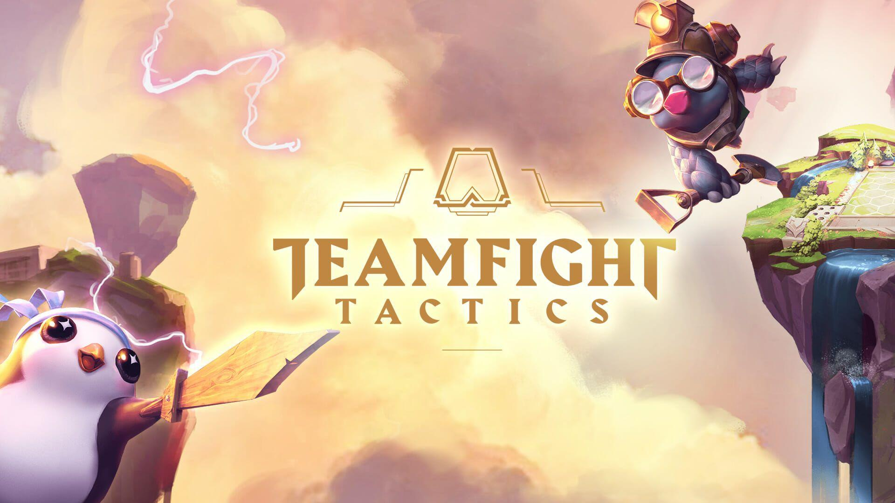

Who I Am
Hi, I'm Sylvester, a second-year IT student with a passion for game development. I'm eager to contribute to the creation of future games or assist in bringing them to life.
What I Do / Hobbies

I enjoy reading as a way to continuously learn and gain new perspectives, especially on topics that inspire creativity and personal growth.

Gaming fuels my strategic thinking and problem-solving skills, while also providing a fun outlet for relaxation and connection.

I'm passionate about web development bringing ideas to life through clean XD, user focused design and efficient code.